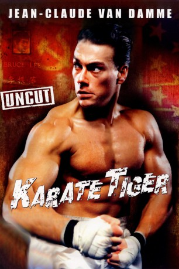

#2184 Karate Tiger - Der letzte Kampf
Alternativ: No Retreat, No Surrender
 
 IMDB-Wertung: 5.7 / 10
IMDB-Wertung: 5.7 / 10  Metascore: 30
Metascore: 30 
Von einem skrupellosen Verbrecher-Syndikat unter Druck gesetzt, zieht es der Karatelehrer Stillwell vor, Los Angeles zu verlassen, um sich in Seattle eine neue Existenz aufzubauen. Sein Sohn Jason, ein glühender Verehrer von Bruce Lee, dessen Kampftechnik und Philosophie ihn fasziniert, ist über das feige Verhalten seines Vaters tief enttäuscht. Niedergeschlagen und verzweifelt pilgert Jason in Seattle, der Heimatstadt Lee's, zu dessen Grab und fleht ihn um Beistand an. Von nun an trainiert Jason wie ein Besessener. Er will seine Kampftechnik ganz im Stil seines großen Vorbildes perfektionieren. Eines Nachts erscheint ihm der Meister im Traum und lehrt ihn alle Geheimnisse seines Erfolges. Gewappnet mit kostbarem Wissen und stählernem Mut, nimmt Jason den Kampf gegen die kriminellen Elemente der Stadt auf. Erst als er die Herausforderung erhält, gegen den Russen Ivan zu kämpfen, kommt Jason in große Bedrängnis. Es ist eine Herausforderung auf Leben und Tod...
Jahr: 1986
Dauer: 85 Minuten
FSK: 12
Land: USA Studio: New World PicturesTonspuren:
Untertitel: Deutsch,
Auflösung: 1080p (1920x1040) Größe: 8140 MB
Genre: Action, Drama, Krimi
Regisseur:  Corey Yuen
Corey Yuen
Drehbuch: See-Yuen Ng, Corey Yuen, Keith W. Strandberg
Soundtrack: Paul Gilreath, Frank Harris
Darsteller:
- Kurt McKinney als Jason Stillwell
 Jean-Claude Van Damme als Ivan Kraschinsky the Russian
Jean-Claude Van Damme als Ivan Kraschinsky the Russian- Kathie Sileno als Kelly Reilly
- Kent Lipham als Scott
- Rey-Phillip Santos als Karate Student , uncredited
- J.W. Fails als R.J. Madison
- Tae-jeong Kim als Sensei Lee
- Ron Pohnel als Ian Reilly
- Dale Jacoby als Dean Ramsay
- Peter Cunningham als Frank Peters
- Timothy D. Baker als Tom Stillwell
- Gloria Marziano als Mrs. Stillwell
- Joe Verroca als New York Agent
- Farid Panahi als New York Assistant #1
- Tom Harris als New York Assistant #2
- John Andes als New York Boss
- Mark Zacharatos als New York Fighter #1
- Ty Martinez als New York Fighter #2
- Bob Johnene als Karate Fight Emcee
- Dennis Park als Karate Fight Referee
- Alex Stelter als Karate Fight Judge
- Harold Engel als Karate Fight Judge
- Jerry Cole als Karate Fight Judge
- Ken Firestone als Karate Fight Judge
- Wayne Yee als Karate Fight Judge
- Charlie Sparks als Scott's Father
- Lynetta Welch als Kelly's Friend
- Carin Badger als Kelly's Friend
- Tina Erickson als Kelly's Friend
- Corey Jordan als Dean's Friend
- Neil Rozbaruch als Dean's Friend
- George Mason als Bar Thug #1
- Robert Villeaux als Bar Thug #2
- Dave Robinson als Bar Thug #3
- Keith Strange als Bar Thug #4
- Ruckins McKinley als Breakdancer
- Roz McKinley als Breakdancer
- Steve Marcello Arce als Karate Student
- Jamie Krasnoo als Karate student , uncredited
- Michele Krasnoo als Karate Student , uncredited
- Dennis Casey Park als Karate Fight Referee , uncredited
- Brandon Pender als Ian Reilly's Sparring Partner , uncredited
- Sharice Zulo als Patron , uncredited
Datei: X:\HD-Eastern-Collections\Karate Tiger\Karate Tiger - Der letzte Kampf (1986, FSK12, 1920x1040).mkv seit 19.10.2015
Festplatte: HD Eastern+Western
 Alle Filme aus Gruppe 'HD-Eastern-Collections\Karate Tiger'
Alle Filme aus Gruppe 'HD-Eastern-Collections\Karate Tiger'